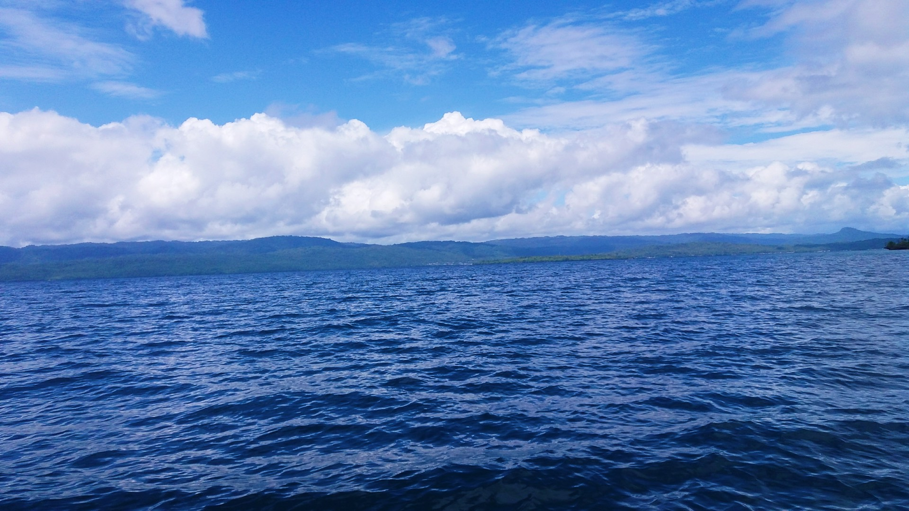

Gambar berita (placeholder)
Gotong Royong Membersihkan Lingkungan Desa
Warga tiga dusun bersama perangkat desa melaksanakan kerja bakti membersihkan jalan dan saluran air menjelang musim hujan.
Desa di tepi Selat Buton dengan masyarakat yang beragam dan hidup rukun. Informasi profil, pemerintahan, anggaran, dan layanan desa dalam satu tempat.

Assalamu'alaikum warahmatullahi wabarakatuh. Selamat datang di website resmi Desa Mabulugo. Melalui website ini kami berharap informasi tentang profil, pemerintahan, anggaran, dan layanan desa dapat diakses dengan mudah oleh seluruh warga dan masyarakat luas. Mari bersama-sama membangun desa yang maju, mandiri, dan sejahtera.
Nama Kepala Desa (contoh)
Kepala Desa Mabulugo · Desa definitif sejak 2006, kepala desa pertama Wa Ode Nurnia
Lihat syarat dokumen sebelum datang ke kantor desa.
Untuk legalitas usaha, pinjaman modal, atau bantuan alat.
Lihat syarat KependudukanBukti tempat tinggal bagi warga di tiga dusun.
Lihat syarat Bantuan SosialUntuk beasiswa, berobat, atau pengusulan bantuan.
Lihat syarat AspirasiSampaikan saran atau keluhan kepada pemerintah desa.
Lihat syaratPemerintah desa menyajikan anggaran secara terbuka agar dapat dipantau seluruh warga. Angka di samping adalah contoh tampilan.
Buka Halaman TransparansiPendapatan Rp 1,42 M · Belanja Rp 1,445 M · Pembiayaan Rp 25 juta
Hasil bumi warga, antara lain padi, jambu mete, kelapa, dan kakao (contoh).
Usaha olahan dan kerajinan warga (contoh).
Daya tarik alam desa. Alamat tercatat di Boneatiro, Kapontori (perlu diverifikasi).
Warga tiga dusun bersama perangkat desa melaksanakan kerja bakti membersihkan jalan dan saluran air menjelang musim hujan.
Kegiatan posyandu bulan ini diikuti puluhan ibu dan balita, meliputi penimbangan, imunisasi, dan penyuluhan gizi.
Pemerintah desa siap mendengar usulan dan keluhan warga.